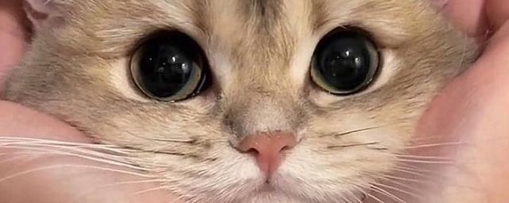

Привіт! Мене звати Ліна, і я рада познайомитися з тобою
Я — людина, яка завжди шукає баланс між розвитком і насолодою життям. Мені
подобається дізнаватися нове, випробовувати себе і розвивати свої
здібності. Одне з моїх захоплень — аніме з героями, які ховають свою силу,
та захоплюючі бої з монстрами. Я люблю, коли сюжет захоплює, а персонажі
мають глибокі історії та внутрішню боротьбу.
Мій характер можна описати як поєднання терпіння, усвідомленості та прагнення до розвитку. Я уважно ставлюся до себе та до інших, люблю аналізувати свої думки і емоції. Мені важливо розуміти себе, визначати свої цілі та працювати над їх досягненням, і при цьому не забувати про задоволення від життя.У спілкуванні я щира та відкрита, але можу бути трохи обережною на початку, поки людина не стане близькою. Ціную глибокі розмови, цікаві ідеї та людей, які готові ділитися своїм внутрішнім світом.
Я дуже ціную творчість та фантазію — мені подобається занурюватися у вигадані світи, де можна відкривати нові історії і героїв. Це не лише хобі, а спосіб надихатися і дивитися на реальне життя під іншим кутом. Я люблю загадки, складні сюжети і несподівані повороти — вони захоплюють мене і розвивають увагу та мислення.
